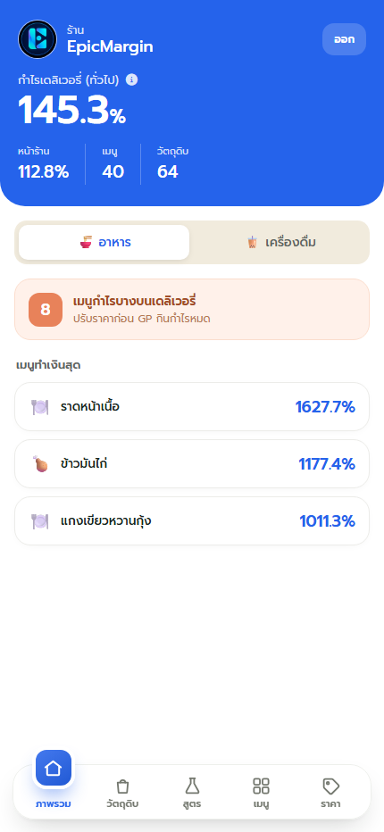
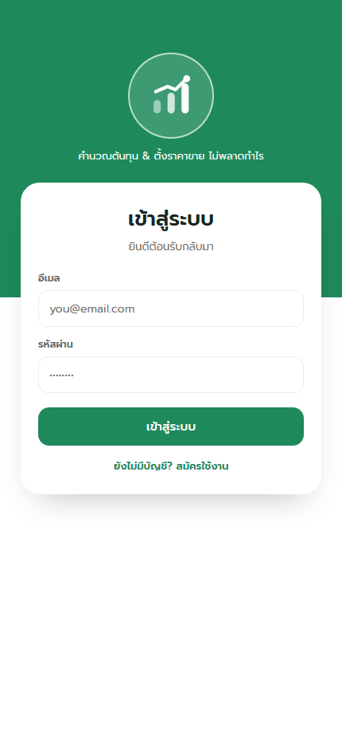
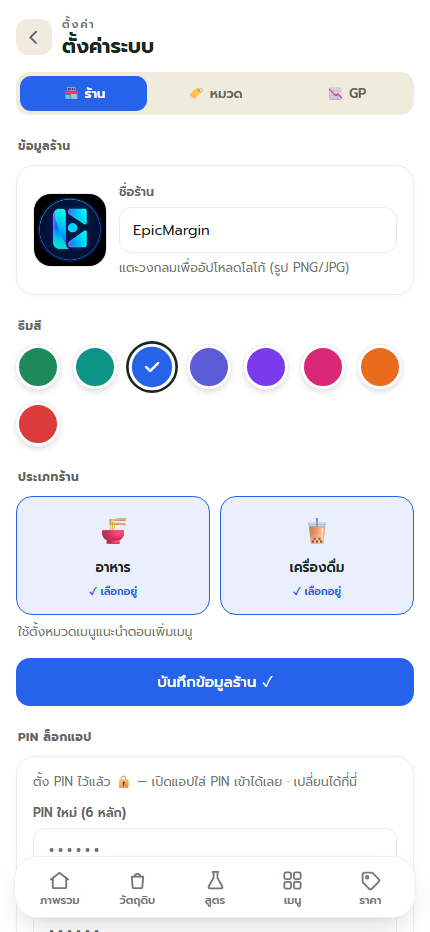
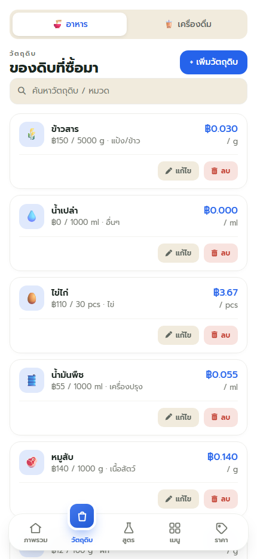
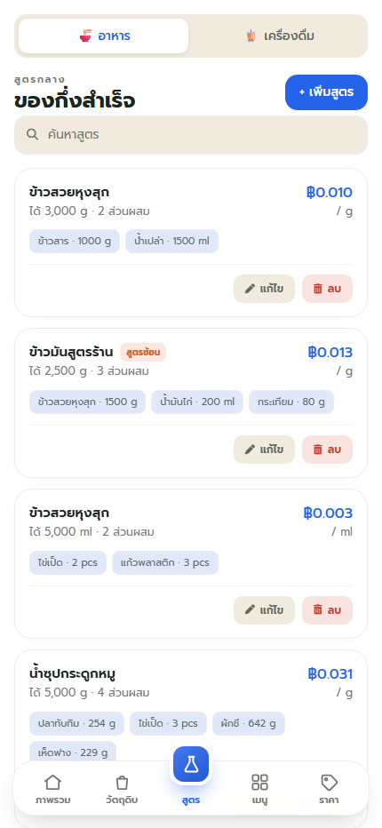
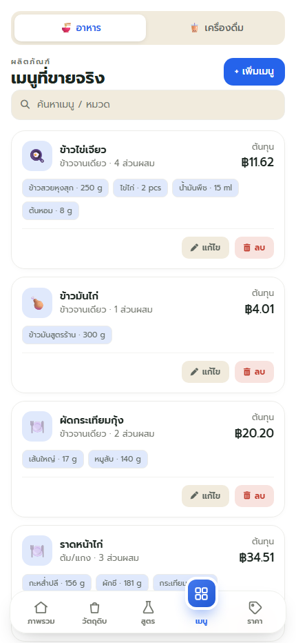
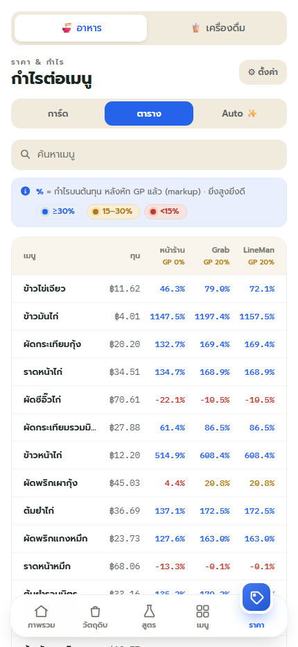
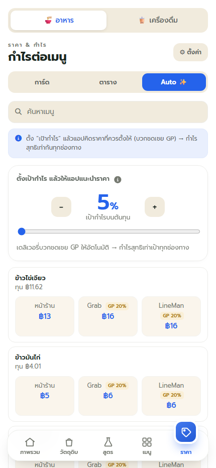

Vanilla Web
HTML, CSS และ JavaScript แบบ ES Modules ไม่มี React/Vue และไม่ต้อง build
คู่มือภาษาไทยแบบเห็นภาพ สำหรับ Windows ครอบคลุมเครื่องมือพัฒนา ฐานข้อมูล ระบบสมาชิก รูปภาพ การทดสอบ และการเผยแพร่เว็บไซต์

รู้จักระบบก่อนติดตั้ง
HTML, CSS และ JavaScript แบบ ES Modules ไม่มี React/Vue และไม่ต้อง build
PostgreSQL, Authentication และ Row Level Security แยกข้อมูลของแต่ละร้าน
เก็บโลโก้ รูปวัตถุดิบ และรูปเมนูผ่าน unsigned upload
Node.js สำหรับ local server/tests และ qa-lab + Playwright สำหรับทดสอบหน้าจอจริง
เตรียมเครื่อง Windows
ติดตั้ง Node.js LTS และ Git ก่อน ส่วน VS Code เป็นตัวช่วยแก้โค้ดที่แนะนำแต่ไม่บังคับ
node --version
npm --version
git --versionรับซอร์สโค้ด
cd $HOME\Downloads
git clone https://github.com/EPICCODING17/EpicMargin.git
cd EpicMargin
npm install
npm testunit tests ผ่าน 12 รายการ และไม่มี test ล้มเหลว
EpicMargin/ ├─ web/ เว็บ production ├─ db/schema.sql ฐานข้อมูล + RLS ├─ scripts/ server และเครื่องมือ ├─ test/ unit tests └─ package.json
Backend และสมาชิก
เข้า supabase.com กด New project เลือก region Singapore และตั้ง Database Password
เปิด SQL Editor → New query แล้วคัดลอกไฟล์ db/schema.sql ทั้งไฟล์ไป Run
Authentication → Providers → Email ช่วงพัฒนาปิด Confirm email ได้ แต่ production ควรเปิดพร้อม Custom SMTP
Authentication → URL Configuration เพิ่ม http://localhost:8765/** และ URL production
Project Settings → API เก็บ Project URL และ publishable/anon key
เชื่อมต่อระบบ
web/config.jsนำ Project URL และ publishable key ของ Supabase มาแทนค่าตัวอย่าง
export const SUPABASE_URL =
'https://XXXXXXXX.supabase.co';
export const SUPABASE_ANON_KEY =
'sb_publishable_XXXXXXXX';
รูปภาพ — เลือกทำได้

export const CLOUDINARY = {
cloudName: 'YOUR_CLOUD_NAME',
uploadPreset: 'YOUR_UNSIGNED_PRESET',
};ไม่ตั้งค่าก็ใช้งานได้ ระบบจะแสดง emoji แทนรูป
Local development
node scripts/serve-web.mjsตั้งค่าร้าน




Quality assurance
ตรวจสูตรต้นทุน, สูตรซ้อน, GP และ Auto Price
npm testใช้ qa-lab คลิกจริง แคปหน้าจอ และจับ console/HTTP errors
qa-lab projects/epicmargin.app.test.mjs
Production
git add .
git commit -m "Deploy EpicMargin"
git push origin main
git subtree push --prefix web origin gh-pagesgh-pages และ folder = /(root)Troubleshooting
อย่าเปิด `index.html` โดยตรง ให้รัน `node scripts/serve-web.mjs` และเปิด `http://localhost:8765`
รัน `db/schema.sql` รุ่นล่าสุดอีกครั้ง ต้องมีครบ 9 ตาราง โดยเฉพาะ `categories` และ RLS policy
ตรวจ Project URL, publishable key, อินเทอร์เน็ต และ Network tab ใน Developer Tools
ถ้าเปิด Confirm email ต้องยืนยันอีเมลก่อน ตรวจ Spam และการตั้งค่า SMTP
ตรวจว่าผู้ใช้ล็อกอินแล้ว และรัน schema ที่มี RLS policy ครบทุกตาราง
ตรวจ Cloud name และ Upload preset โดย preset ต้องเป็น Unsigned
พร้อมใช้งานจริง
รู้ต้นทุนจริง ตั้งราคาขายไม่พลาด ทั้งหน้าร้านและเดลิเวอรี่